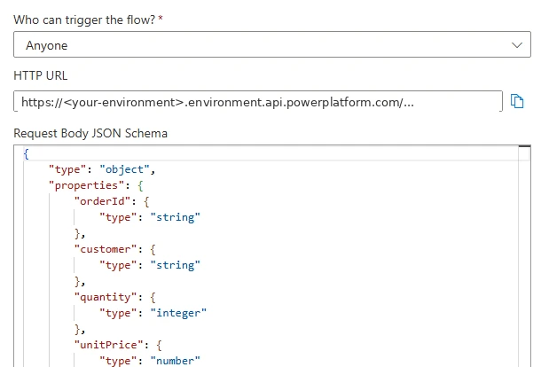

- Power Automate
- Level 9 · Integration and AI · 5 of 10
Starting a flow with an HTTP request
The trigger When an HTTP request is received gives a flow its own URL. Another system sends a request and the flow starts; with a Response action it answers. This is a premium trigger.
Request in, response out
WhatA trigger with a URL, a method and a JSON schema, plus a Response action.
WhyWebsites, scripts and SaaS webhooks can start your flow and get an answer.
DemoPost an order; get back the total.
One call
Caller: POST to the flow's URL with JSON
Does the body match the schema?
Yes
Order total =
mul(quantity, unitPrice)Response 200: {"total": 148.5, …}
No / invalid
Respond 400 with a message

POST <the flow's HTTP URL>
Content-Type: application/json
{
"orderId": "ORD-1001",
"customer": "Contoso",
"quantity": 3,
"unitPrice": 49.5
}HTTP/1.1 200 OK
{
"received": "ORD-1001",
"customer": "Contoso",
"total": 148.5,
"message": "Order accepted by the demo flow"
}Values in the demo
| Field | Value |
|---|---|
| quantity | 3 |
| unitPrice | 49.5 |
| total | 148.5 |
Who can trigger it
| Setting | Caller needs | Use for |
|---|---|---|
| Anyone | The URL (it contains a signature) | External webhooks; keep the URL secret |
| Any user in my tenant | A Microsoft Entra ID token | Internal apps and scripts |
| Specific users in my tenant | A token for listed users | Tightly controlled callers |
Watch out
- Treat an Anyone URL like a password: secret store or Secret environment variable, never in code or screenshots.
- Callers must send
Content-Type: application/json, or the body arrives as text. - Answer fast; for slow work respond 202 first.
New to this? Start from the basics optional
Endpoint: a URL that accepts requests.
Status code: 200 OK, 400 bad input, 500 server error.
Common mistakes
- Sharing the URL in chat or email.
- No validation before using the body.
- Long work before the Response.